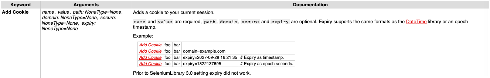
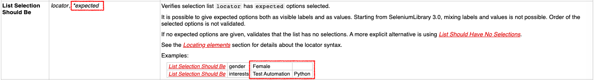

- Robot Framework 概念：
Robot Framework 官方文件解析
Robot Framework 官方網站有很多的 Standard Libraries。下面大概敘述一下文件是由哪些欄位組成的。
官方網站主要是由幾個欄位組成的：
- Keyword(關鍵字): 這就是先前提到的關鍵字。而在官方標準套件裡面都是已經預先定義好的關鍵字。
- Arguments (引述): 這個欄位定義了哪些引述是需要被帶入的。如果沒有帶入必要的引述，執行測試時就會失敗。SeleniumLibrary 裡面有一個關鍵字 List Selection Should Be（清單必須包含的選項)。這一個關鍵字裡面需要兩個引述，一個是 "locator"（元素定位)，這裡的元素定位只能輸入一個。另一個是 "*expected"。當引述出現了 * 這個符號這個引述代表可以輸入單一或多個引述。
 範例: List Selection Should Be xpath="/div/name/wee" Vege Coffee - Documentation (補充說明): 關鍵字補充說明或是範例解說。如果特定的關鍵字被停用了也會被紀錄在這個欄位。
以這個範例來說，Vege 跟 Coffee 都是引述 expected（預期）的文字